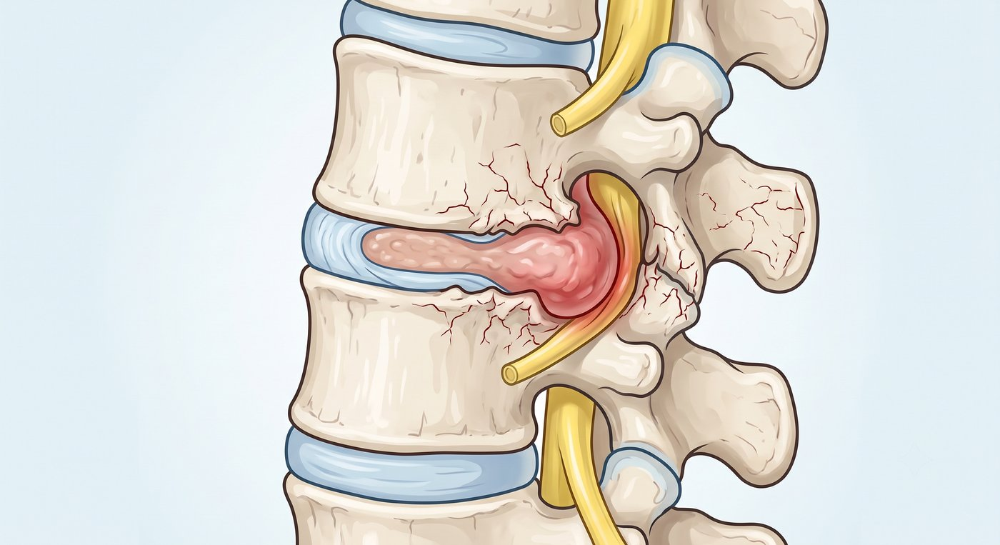
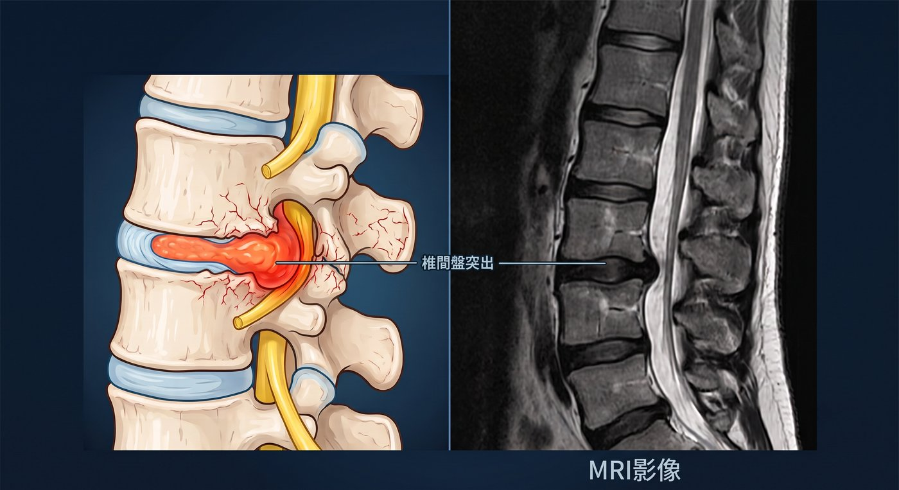

下背痛一路拉到屁股、大腿、小腿，甚至腳底？
這可能不是單純拉傷，而是坐骨神經受到壓迫。
很多人一開始只是覺得腰痠、屁股痛，以為是閃到腰、肌肉拉傷，休息幾天就會好。
但後來疼痛開始往下跑，從腰部、臀部、大腿後側，一路延伸到小腿、腳踝，甚至腳底麻、腳趾麻。
有些人久坐、彎腰、搬重物後更痛；也有人咳嗽、打噴嚏時，腰部到腿部像電到一樣抽痛。
這種從下背一路延伸到腿部的麻、痛、電擊感，常被稱為坐骨神經痛。
坐骨神經痛不是一個單一疾病，而是一種症狀。
背後常見的原因，是椎間盤突出或骨刺壓迫到腰椎神經。
為什麼椎間盤突出會造成坐骨神經痛？
腰椎裡面有神經通往臀部、大腿、小腿與腳掌。
當椎間盤突出、骨刺增生，或退化組織壓迫到神經時，就可能引起神經發炎與傳導痛。
常見症狀包括：
- 下背痛
- 臀部疼痛
- 大腿後側痠痛
- 小腿麻痛
- 腳底或腳趾麻
- 久坐、彎腰、咳嗽時更痛
- 腿部無力、走路不穩
有些人痛在左腳，有些人痛在右腳。
神經被壓迫的位置不同，麻痛延伸的範圍也會不一樣。
所以，真正重要的不是只看「哪裡痛」，而是要判斷：
是哪一條神經受到壓迫。

什麼症狀需要特別注意？
如果出現以下情況，建議儘早由醫師評估：
- 疼痛從腰部延伸到臀部、大腿或小腿
- 單側腿部出現電擊般、抽痛或拉扯感
- 腳麻、腳底麻、腳趾麻反覆出現
- 久坐、彎腰、咳嗽或打噴嚏時症狀加重
- 疼痛影響睡眠、工作或日常活動
- 吃藥、復健後仍反覆發作
- 腿部無力、走路容易拖腳或踩空
- 症狀越來越頻繁，或疼痛越來越往下延伸
一般 X 光可以看脊椎退化、骨刺與滑脫；如果要確認椎間盤突出或神經壓迫的位置，通常需要安排核磁共振檢查。
一直拖延會怎麼樣？
椎間盤突出或骨刺造成的神經壓迫，有些會隨著時間與保守治療慢慢改善。
但如果神經持續被壓迫，疼痛與麻木
反覆發作，可能會讓人越來越不敢久坐、久站、走路或運動。
有些人一開始只是偶爾麻痛，後來變成每天都痛；
原本只是屁股痠，後來變成小腿麻、腳底麻，甚至出現腿部無力。
如果神經受壓時間太久，少數嚴重情況可能造成肌力下降、肌肉萎縮、走路拖腳，甚至大小便控制異常等較難恢復的後果。
疼痛可以忍，但神經症狀不應該一直拖。
如果麻木、疼痛或無力已經影響生活，就應該找出真正的原因，而不是只靠止痛藥撐過去。
坐骨神經痛一定要開刀嗎？
不一定。
不是每一個椎間盤突出或骨刺壓迫都需要手術。
有些患者可以先透過藥物、復健、姿勢調整，或神經阻斷、硬膜外注射等方式改善症狀。
但重點是：
- 您的坐骨神經痛，到底是不是腰椎神經壓迫造成的？
- 椎間盤突出或骨刺的位置，是否和症狀相符合？
- 目前是可以先保守治療，還是已經需要進一步處理？
這些都需要在門診透過症狀、身體檢查與影像檢查一起判斷。
什麼是微創腰椎神經減壓手術？
如果神經壓迫明確，症狀持續影響生活，且保守治療效果有限，就可能需要評估是否適合手術治療。
手術的目的，是幫被壓迫的神經「減壓」。
簡單來說，就是把壓迫神經的突出椎間盤、骨刺或退化組織移除，讓神經重新有空間。
微創腰椎神經減壓手術會透過較小的傷口，在顯微鏡、內視鏡或影像輔助下，處理真正壓迫神經的位置，盡量減少對肌肉與正常組織的破壞。
對適合的患者來說，手術目標是：
- 減少神經壓迫
- 改善坐骨神經痛
- 減少腳麻、腿痛與無力
- 幫助恢復日常活動
- 坐骨神經痛，不一定只是拉傷
很多人因為害怕開刀，選擇一忍再忍。
但如果腰痛、屁股痛、腳麻或腿痛已經反覆影響生活，就不要只是一直忍耐。
讓專業醫師協助您評估，找出真正的原因，才能選擇最適合您的治療方式。
手術不是目的，重新回到生活才是目的。
把時間留給生活，不留給疼痛。